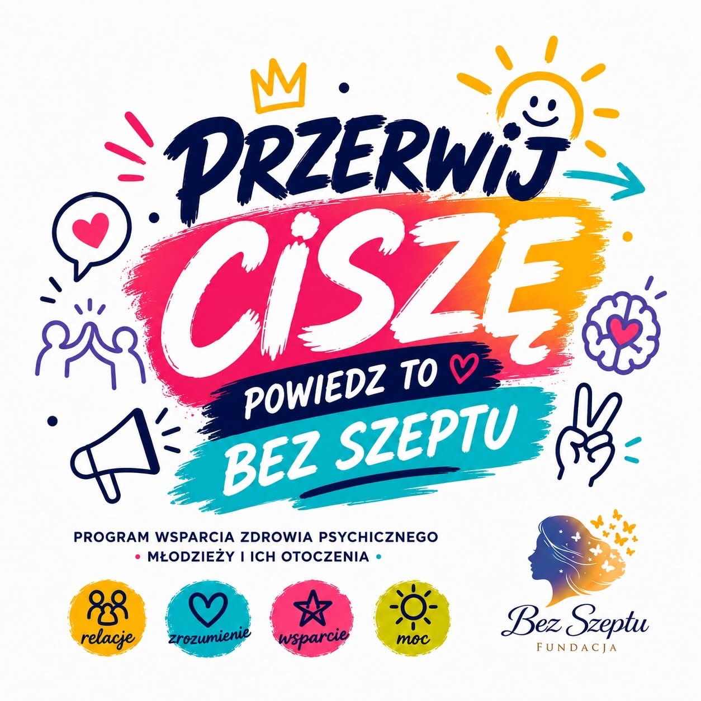

Nasze programy
Konkretne inicjatywy skierowane do różnych grup — młodzieży, kobiet, seniorów. Każdy program to realne wsparcie, warsztaty i narzędzia dopasowane do potrzeb.
Młodzież 12–18

Przerwij ciszę
Program wsparcia zdrowia psychicznego młodzieży i ich otoczenia. Warsztaty, spotkania i bezpieczna przestrzeń do rozmowy o emocjach.
Dowiedz się więcej →
Kobiety · e-learning

Aktywizacja zawodowa kobiet
Kurs „Kariera" — kompleksowy program e-learningowy wspierający kobiety w powrocie na rynek pracy i budowaniu pewności siebie.
Przejdź do kursu →
Wkrótce
zdjęcie: Aktywni seniorzy
Aktywni seniorzy
Program wspierający aktywność, samodzielność i włączenie społeczne osób starszych. Szczegóły dodamy wkrótce.
Dowiedz się więcej →
Wkrótce
zdjęcie: Nie marnuję – zyskuję
Nie marnuję – zyskuję
Program edukacyjny o świadomym gospodarowaniu zasobami i przeciwdziałaniu marnowaniu. Szczegóły dodamy wkrótce.
Dowiedz się więcej →